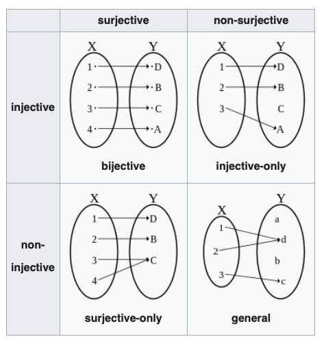

02wk: 귀류법과 일반화, 수학과의 표현, Cardinality의 개념
1. 강의영상
2. 우리의 목표
우리가 원하는 것: \([0,2\pi)\)의 유리수집합과 무리수집합은 모두 원소가 무한개임. 그런데 무한에도 급이 있다는 것을 나타내고 싶어. 즉 \([0,2\pi)\)의 유리수집합의 원소수보다 \([0,2\pi)\)의 무리수집합의 원소수가 훨씬 많다는 사실을 설명하고 싶어.
3. 귀류법과 일반화
A. 귀류법
- 귀류법: 니 논리 대로면… <- 인터넷 댓글에 많음..
님 논리대로면..
- XXX가 문제 없으면 서울 전체가 문제가 없고 (애초에 서울은 문제도 아니라는데 왜 이소리는 하고 계신지 모르겠지만)
- 수도권 모 대학이 문제가 없으면 전체가 문제가 없겠네요?
- 지방도 1개 대학이 문제가 없으니 전체가 문제 없겠네요?
와우! 모든 문제가 해결되었습니다! 출산율 감소로 인한 한국대학의 위기가 해결되었.. 아니 애초에 위기가 없었군요!.
어휴.. ㅠㅠref: 하이브레인넷
- (지난시간에서) 한점의 확률이 0이어야 하는 이유?
B. 일반화
- 연필의 정의: 필기도구의 하나. 흑연과 점토의 혼합물을 구워 만든 가느다란 심을 속에 넣고, 겉은 나무로 둘러싸서 만든다. 1565년에 영국에서 처음으로 만들었다.
- 질문: 아래는 연필인가?

4. 언젠가 필요할까?
- 이론: \(|x|<\epsilon, ~\forall \epsilon>0 ~\Leftrightarrow x=0\)
(증명)
“\(\Leftarrow\)” 자명함.
“\(\Rightarrow\)”
SUPPOSE: \(|x| > 0\) – 귀류법
CHOOSE: \(\epsilon=\frac{1}{2}|x|\)
\(\Rightarrow\) \(0<\frac{1}{2}|x|<|x|\)
\(\Rightarrow\) 모순
- 이론: \(|x| < \frac{1}{n},~ \forall n \in \mathbb{N} ~ \Leftrightarrow ~x=0\)
5. 수학과의 표현
A. 수학과의 기호
- 아래는 기호는 몇 가지 영어단어의 축약형이다.
- for all: \(\forall\)
- exists: \(\exists\)
- such that, satisfying: \({\sf s.t.}\), \({\sf st}\)
- if-then, implies, therefore: \(\Rightarrow\)
- if and only if: \(\Leftrightarrow\)
- because: \(\because\)
- therefore: \(\therefore\)
- quod erat: \(\square\), \(\blacksquare\)
- 예시1: 모든 실수 \(x\)에 대하여, \(x^2\)은 양수이다.
언어
- for any \(x\) in \(\mathbb{R}\), \(x^2 \geq 0\).
- for arbitrary \(x \in \mathbb{R}\), \(x^2 \geq 0\).
- for any choice of \(x \in \mathbb{R}\), \(x^2 \geq 0\).
- for all \(x \in \mathbb{R}\), \(x^2 \geq 0\).
- if \(x \in \mathbb{R}\), then \(x^2 \geq 0\).
기호
- \(\forall x \in \mathbb{R}\): \(x^2\geq 0\).
- \(\forall x \in \mathbb{R}\), \(x^2\geq 0\).
- \(x^2 \geq 0\), for all \(x \in \mathbb{R}\).
- \(x^2 \geq 0\), \(\forall x \in \mathbb{R}\).
- \(x \in \mathbb{R} \Rightarrow x^2 \geq 0\).
거의 쓰는 사람 마음임, 그런데 뉘앙스가 조금씩 다름.
- 예시2: \(\Omega\)의 임의의 부분집합 \(A\),\(B\)에 대하여, \(A=B\) 일 필요충분조건은 \(A\subset B\) 이고 \(B \subset A\) 이어야 한다.
언어
- for all \(A,B \subset \Omega\), \(A=B\) if and only if (1) \(A \subset B\) and (2) \(B \subset A\).
기호
- \(A = B \Leftrightarrow A \subset B \text{ and } B \subset A, \forall A,B \in \Omega\).
- \(A = B \Leftrightarrow \big(A \subset B \text{ and } B \subset A\big), \forall A,B \in \Omega\).
- \(\forall A,B \subset \Omega\): \(A = B \Leftrightarrow \big(A \subset B \text{ and } B \subset A\big)\)
의미가 때로는 모호할때가 있지만 눈치껏 알아먹어야 한다.
- 예시3: 임의의 양수 \(\epsilon>0\)에 대하여 \(|x| \leq \epsilon\)이라면 \(x=0\)일 수 밖에 없다.
언어
- If \(|x|< \epsilon\) for all \(\epsilon>0\), then \(x=0\).
- If \(|x|< \epsilon\), \(\forall \epsilon>0\), then \(x=0\).
- For all \(\epsilon>0\), \(|x|< \epsilon\) implies \(x=0\). – 틀린표현
기호
- \(|x| < \epsilon,~ \forall \epsilon>0 \Rightarrow x=0\)
- \(\forall \epsilon>0: |x| < \epsilon \Rightarrow x=0\) – 애매하다?
- \(\big(\forall \epsilon>0:|x| < \epsilon\big) \Rightarrow x=0\)
- \(\big(\forall \epsilon>0\big)\big(|x| < \epsilon \Rightarrow x=0\big)\) – 틀린표현
B. 기타 약어 및 상투적인 표현
- 약어
- \({\sf WLOG}\): Without Loss Of Generality
- \({\sf WTS}\): What/Want To Show
- \({\sf iff}\): if and only if
- \({\sf Q.E.D.}\): 증명완료 (쓰지마..)
- \({\sf LHS}\): Left Hand Side
- \({\sf RHS}\): Right Hand Side
- 상투적인 표현
- It suffices to show that, It is sufficient to show that
C. 수에 대한 표현
- 수학과에서는 수의 집합에 대한 약속된 기호가 있다.
- 실수전체의 집합을 \(\mathbb{R}\)로 표현한다.
- 자연수전체의 집합을 \(\mathbb{N}\)으로 표현한다.
- 정수전체의 집합을 \(\mathbb{Z}\)로 표현한다.
- 유리서전체의 집합을 \(\mathbb{Q}\)로 표현한다.
- \(\infty\)는 수가 아니다.
- \(\{-\infty,\infty\} \not\subset \mathbb{R}\)
- \(\{\infty\} \notin \mathbb{N}\)
# 예시 – 아래 문장의 참 거짓을 판별하라.
- \(\forall n \in \mathbb{N}\): \(0 < \frac{1}{n} \leq 1\)
참이다. (하지만 \(\infty \in \mathbb{N}\)을 가정한다면 이것이 참이라고 주장하기 애매하겠지)
#
- 편의상 \(\infty\)를 수처럼 생각하여 아래와 같은 집합기호로 표현하기도 한다.
- \(\mathbb{R} \cup \{-\infty,\infty\} = \bar{\mathbb{R}}\)
6. Cardinality
A. Cardinality 가 뭐야?
- 가짜정의: 집합 \(A\)의 cardinality는 집합에 들어있는 “원소의 수”를 좀 더 일반화한 개념이다. 집합 \(A\)가 유한집합일 경우는 우리에게 익숙한 size의 개념을 그대로 사용하면 된다. 예를들어 집합 \(A = \{2,3,4\}\) 일 경우는
\[\text{cardinal number of } A := |A| = 3\]
와 같이 사용하면된다. 만약에 집합 \(A\)가 무한집합이라면 그 동작원리가 조금 복잡하다.
B. 전사/단사/전단사
- 질문: \(|\mathbb{Q}| < |\mathbb{Q}^c|\) ??
Bijection, injection and surjection (예비학습)

- 용어 정리
- surjective = onto = 전사 = 위로의 함수
- injective = one-to-one = 단사 = 일대일 함수
- bijective = one-to-one and onto, one-to-one correspondence = 전단사 = 일대일 대응
- 따지는 방법:
- 단사: 함수 \(f\)는 \(X\)에서 \(Y\)로 향하는 단사함수이다. \(\Leftrightarrow\) \(\forall x_1,x_2 \in X\): \(x_1\neq x_2 \Rightarrow f(x_1)\neq f(x_2)\)
- 전사: 함수 \(f\)는 \(X\)에서 \(Y\)로 향하는 전사함수이다. \(\Leftrightarrow\) \(\forall y \in Y ~\exists x \in X\) such that \(f(x)=y\).
- 성질1: 어떤함수가 전사함수 & 단사함수 \(\Rightarrow\) 전단사함수
- 성질2:
- 집합 \(X\)에서 집합 \(Y\)로 가는 단사함수 \(f\)가 존재한다. \(\Rightarrow\) \(|X| \leq |Y|\)
- 집합 \(X\)에서 집합 \(Y\)로 가는 전사함수 \(f\)가 존재한다. \(\Rightarrow\) \(|X| \geq |Y|\)
- 강의노트에 쓰기 좀 애매한 내용을 부록에 담았습니다… 읽어보시고 느낌을 잘 잡으세요!!
(예비학습 끝)
- 성질1~2로 유추하면 아래와 같은 사실을 주장 할 수 있지 않을까?
- 집합 \(X\)에서 집합 \(Y\)로 향하는 전단사함수가 존재한다 \(\Rightarrow\) \(|X|=|Y|\)
- 그렇다면 우리가 주장하고 싶은 것은 아래와 같이 된다.
- 유리수집합의 무리수집합의 cardinality는 다르다.
- 유리수집합과 무리수집합사이의 전단사함수는 존재할 수 없다.
- 우리가 궁극적으로 궁금한 것
- 유리수집합과 무리수집합의 카디널리티는 다를까?
- 그냥 궁금한 것
- 자연수의 집합, 비음인 정수의 집합, 음의 정수의 집합, 정수의 집합, 짝수의 집합, 홀수의 집합의 카디널리티는 어떠할까?
C. 자연수/짝수/홀수/정수
# 예제1 – cardinality가 같음을 따지는 방법
집합 \(X=\{1,2,3\}\), \(Y=\{2,4,6\}\)을 생각하자. 적당한 함수 \(f\)를 아래와 같이 정의하자.
- \(f(1)=2\)
- \(f(2)=4\)
- \(f(3)=6\)
아래의 질문에 대답해보자.
- (단사) \(\forall x_1,x_2 \in X\), \(x_1\neq x_2\) \(\Rightarrow\) \(f(x_1)\neq f(x_2)\)?
- (전사) \(\forall y \in Y~ \exists x \in X\) such that \(f(x)=y\).
1의 질문과 2의 질문이 모두 맞으므로 함수 \(f\)는 전단사 함수이다. 집합 \(X\)에서 집합 \(Y\)로 가는 전단사 함수가 존재하므로 집합 \(X\)와 집합 \(Y\)의 카디널리티는 동일하다.
#
# 예제2 – 자연수의 카디널리티와 음이 아닌 정수의 카디널리티
집합 \(X=\{1,2,3,\dots \}\), \(Y=\{0,1,2,\dots \}\)을 생각하자. 함수 \(f\)를 아래와 같이 정의하자.
- \(f(1)=0\)
- \(f(2)=1\)
- \(f(3)=2\)
- \(\dots\)
아래의 질문에 대답해보자.
- (단사) \(\forall x_1,x_2 \in X\), \(x_1\neq x_2\) \(\Rightarrow\) \(f(x_1)\neq f(x_2)\)?
- (전사) \(\forall y \in Y~ \exists x \in X\) such that \(f(x)=y\).
1의 질문과 2의 질문이 모두 맞으므로 함수 \(f\)는 전단사함수이다. 집합 \(X\)에서 집합 \(Y\)로 가는 전단사 함수가 존재하므로 집합 \(X\)와 집합 \(Y\)의 카디널리티는 동일하다.
- \(\aleph_0\) (알레프 널, 혹은 알레프 제로라고 읽음)
- 자연수집합 \(\mathbb{N}\)의 카디널리티는 \(\aleph_0\)이다. 즉 \(|\mathbb{N}|=\aleph_0\).
- 그런데 양수의 집합 \(\mathbb{Z}^+=\mathbb{N} \cup \{0\}\)의 카디널리티 역시 \(\aleph_0\)이다. 즉 \(|\mathbb{Z}^+| = \aleph_0\).
- 놀라운 사실
- 자연수집합은 음이 아는 정수집합의 진 부분집합인데, 카디널리티가 같다. 즉 \(A \subset B\) 인데, \(|A|=|B|\) 인 상황.
- 즉 무한집합의 경우, 본인과 카디널넘버가 같은 진 부분집합이 존재할 수 있다. (유한집합에서는 불가능하겠지)
무한집합의 정의: 집합 \(A\)가 무한집합이다. \(\Leftrightarrow\) \(A\)와 동일한 카디널리티를 가지는 \(A\)의 진 부분집합이 존재한다.
- 조금 무식하게 쓰면 아래와 같이 쓸 수 있다.
- \(\aleph_0 + 1 = \aleph_0\)
#
# 예제3 – 자연수의 카디널리티와 짝수의 카디널리티
집합 \(X=\{1,2,3,\dots \}\), \(Y=\{2,4,6,\dots \}\)을 생각하자. 적당한 함수 \(f\)를 아래와 같이 정의하자.
- \(f(1)=2\)
- \(f(2)=4\)
- \(f(3)=6\)
- \(\dots\)
아래의 질문에 대답해보자.
- (단사) \(\forall x_1,x_2 \in X\), \(x_1\neq x_2\) \(\Rightarrow\) \(f(x_1)\neq f(x_2)\)?
- (전사) \(\forall y \in Y~ \exists x \in X\) such that \(f(x)=y\).
1의 질문과 2의 질문이 모두 맞으므로 함수 \(f\)는 전단사함수이다. 집합 \(X\)에서 집합 \(Y\)로 가는 전단사 함수가 존재하므로 집합 \(X\)와 집합 \(Y\)의 카디널리티는 동일하다.
- 느낌: \(\aleph_0\)를 2배,3배,4배 하여도 \(\aleph_0\)이다. 조금 무식하게 쓰면 아래와 같이 쓸 수 있다.
- \(\aleph_0 \times 2 = \aleph_0\)
- \(\aleph_0 \times 3 = \aleph_0\)
- \(\aleph_0 \times 4 = \aleph_0\)
- \(...\)
- 자연수/홀수/짝수/정수의 카디널리티
- 자연수집합 \(\mathbb{N}\)의 카디널리티는 \(\aleph_0\)이다.
- 짝수인 자연수 집합의 카디널리티는 \(\aleph_0\)이고, 홀수인 자연수 집합의 카디널리티도 \(\aleph_0\)이다.
- 정수집합 \(\mathbb{Z}\)의 카디널리티 역시 \(\aleph_0\)이다.
#
A1. 전사, 단사
1. 단사 (Injective): “단” 하나씩 매칭
- 단사는 “하나씩만 대응”이라는 의미로 기억.
- 외우기: “하나씩 대응하니 겹치면 안 돼!”
- 즉, 다른 입력 \(x_1 \neq x_2\) 이면 출력도 달라야 해(=겹치면안됨) \(f(x_1) \neq f(x_2)\).
2. 전사 (Surjective): “전”부 커버
- 전사는 공역의 모든 원소가 함수의 출력에 포함된다는 의미.
- 외우기: “출력이 빠지지 않고 전부 다 커버돼야 해!”
- 즉, 공역의 모든 값 \(y\)에 대해 대응하는 입력 \(x\)가 있어야 함.
1. 단사 (Injective):
- “나 너한테 단사할 거야.”
- “단사? 그게 뭐야?”
- “너한테만 딱 맞는, 나만의 사랑을 줄 거야. 다른 사람한테는 절대 안 겹치게!”
2. 전사 (Surjective):
- “난 너한테 전사할 준비가 됐어.”
- “전사? 그게 무슨 뜻이야?”
- “네 마음에 빈틈 하나 없이 내가 다가가서, 네가 어디 있든 내가 전부 다 채워줄 거야!”
1. 단사 (Injective):
- “넌 정말 injective야.”
- “그게 무슨 말이야?”
- “넌 특별해서, 같은 사람 두 번 다시는 못 만나겠어. 너랑 똑같은 사람은 절대 없지!”
2. 전사 (Surjective):
- “내 매력은 surjective야.”
- “그게 뭔데?”
- “모두에게 스며들 수 있거든. 빈틈없이 전부 다 사로잡아!”
3. 전단사 (Bijective)
- “우리 관계는 injective와 surjective 같아.”
- “어떻게?”
- “난 너에게만 특별하게 반응하고(단사), 네 마음 구석구석 다 사로잡았으니까(전사). 완벽한 bijective 커플이지!”
1. 단사 (Injective)
- 어원: Injective는 라틴어 “in-” (안으로)와 “jacere” (던지다)에서 유래.
- “In-”: 안으로, 내면으로
- “Jacere”: 던지다
- 어원을 따지면, “injective”는 “어떤 것을 안으로 던지다”라는 의미. 여기서 함수 개념으로 변환하면, 입력을 고유하게(다르게) 출력으로 “던지는” 함수로 해석할 수 있음. 즉, 서로 다른 입력을 서로 다른 출력으로 던지는(대응시키는) 함수라는 뜻.
2. 전사 (Surjective)
- 어원: Surjective는 라틴어 “super-” (위로, 초과하여)와 “jacere” (던지다)에서 유래.
- “Super-”: 위로, 넘어서는
- “Jacere”: 던지다
- “Surjective”는 “위로 던지다”라는 의미를 가짐. 함수의 공역 위로 모든 출력을 던져서(포함시켜서) 공역 전체를 채우는 함수라는 의미로 해석할 수 있음. 즉, 함수의 출력이 공역 전체를 덮어서 빈틈없이 다 대응된다는 의미.
이렇게 injective는 “고유하게 던지다”, surjective는 “공역 전체를 덮어서 던지다”라는 의미에서 비롯된 개념.
1. 단사 (Injective): 선택받는 쪽이 더 큰 사이즈
- 비유: “매우 인기없는 극장에서의 좌석배정”
- 극장좌석이라는 설정: 다른사람이 같은 좌석을 배정받는 일은 애초에 불가능함. 일단 여기서 단사 or 전단사.
- 인기없는 극장이라는 설정: 인기없는 극장이므로 빈자리가 많음. 그래서 단사. (빈자리가 없다면 전단사)
2. 전사 (Surjective): 선택받는 쪽이 더 작은 사이즈
- 비유: “웨이팅이 무지긴 식당에서의 테이블배정”
- 웨이팅이 있다는 설정: 테이블은 이미 꽉차있음. 따라서 일단 전사 or 전단사.
- 만약에 모든 테이블에 사람이 딱 1명씩 존재한다면 전단사. 그 외의 경우는 전사.
단사임을 보이는 방법: A,B 가 서로 다른사람이라면, A,B는 서로 다른 좌석번호값을 가지고 있으면 된다. // 전사임을 보이는 방법: 모든 테이블에 최소한 1명이상의 손님이 있음을 보이면된다.